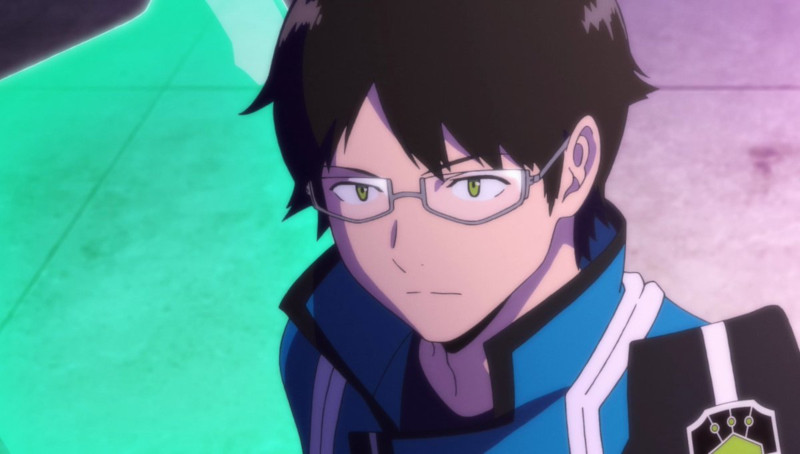

About Osamu
Osamu is the main character of the anime series World Trigger. He's an average teenager with low trion ability, but makes friends that help him along the way, one being a neighbour, the enemies of their world. He joined the Border Organization in order to protect his friend Chika Amatori from the neighbours since they are attracted to her large trion supply.
Osamu during a ranked war
Osamu's Characteristics
- He is very honest according to his friend Yuma
- Highly Determined and courageous, with a strong sense of justice
- Very nice and always goes out of his way to help others
- A leader, stays calm and thinks logically
Osamu's Team: Tamakoma 2
Osamu formed a team with friends he made in the Tamakoma branch of Border. Click on the links below to read more about them!